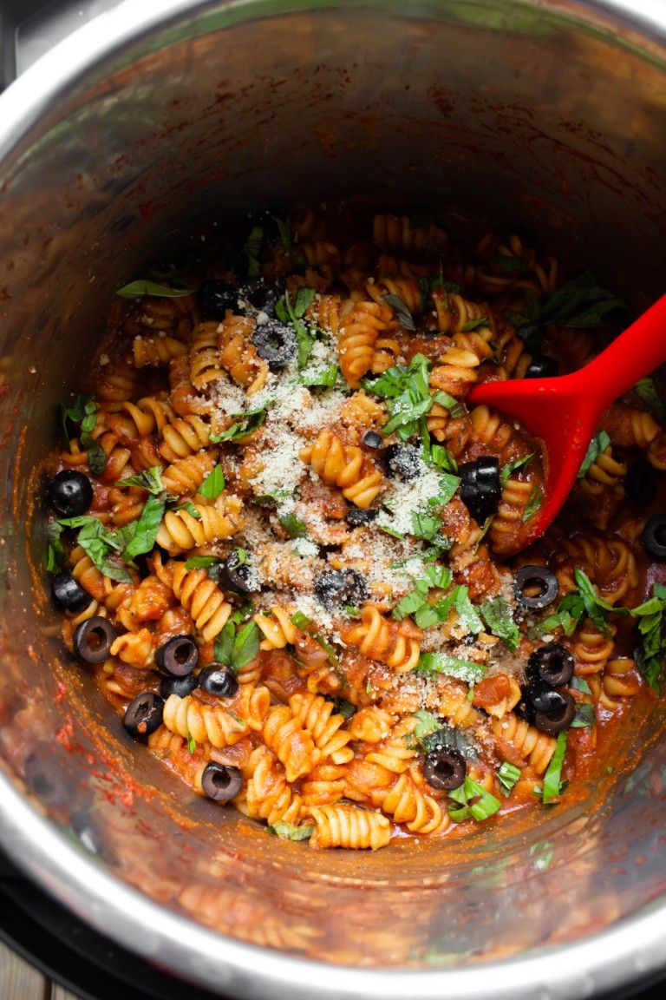

Italian Pasta

Description:
This Vegan Instant Pot Italian Pasta is so incredibly easy and fast to make, requiring only 8 simple ingredients. A 1 pot meal that is oil-free, dairy-free and is topped with a delicious vegan parmesan cheese and fresh basil!
Ingredients:
- Red onion
- Garlic powder
- Italian seasoning: Store-bought or my homemade blend. Just make sure that if you use store-bought, it has no added salt or red pepper flakes.
- Tomato sauce
- Rotini pasta: I used a regular gluten (not whole wheat though) rotini pasta. If you use gluten-free, please research adjusted times for gluten-free pasta in the instant pot.
- Pure maple syrup: Balances out the acidity, you don’t want to leave it out. It really adds dimension to the the flavor.
- Dark balsamic vinegar: Adds depth of flavor to this sauce. This is not the white balsamic, but the dark aged balsamic. I use either the Alessi or Pompeian brands.
- Fresh basil: Using fresh herbs in simple meals like this really do make a difference to the overall flavor, so don’t leave it out!
Steps:
- Cook the onions on the saute setting until they become tender and caramelized (browned). Add water as needed to prevent sticking and burning.
Add the spices and stir for about 30 seconds to toast them and release their aroma. It will absorb any residual moisture.
- Add the remaining ingredients, except the basil and optional ingredients. Stir the mixture really, really well so it is mixed thoroughly.
- Cook on high pressure for 5 minutes and then naturally pressure release for 5 minutes only. Set the timer. Do a manual quick release of any remaining pressure, using a pot cover to protect your hand. Make sure to never stand too close to the pot or near the steam vent.
- Open the lid and it will look quite soupy, this is normal. Stir the pasta around for 1 minute or 2 and it will absorb the remaining liquid perfectly, making it nice and saucy.
- Stir in the basil and add to serving bowls. Garnish with sliced olives and my Lemon Parmesan cheese if desired.
Flavor:
The key to this tomato pasta sauce is the balance of flavors. Tomatoes are very acidic and a bit one note, so to bring that alive, we are using these 3 ingredients that add a touch of sweetness to create a really delicious and balanced tomato sauce:
Pure maple syrup: Just enough to make the overall sauce balanced and taste so delicious.
Red onion: We are cooking the red onion until soft and caramelized, to where they are browned and sweet and add delicious flavor.
Dark balsamic vinegar: This exact vinegar adds a mild sweetness and great punch of balance to the overall flavor. It brings the sauce alive!